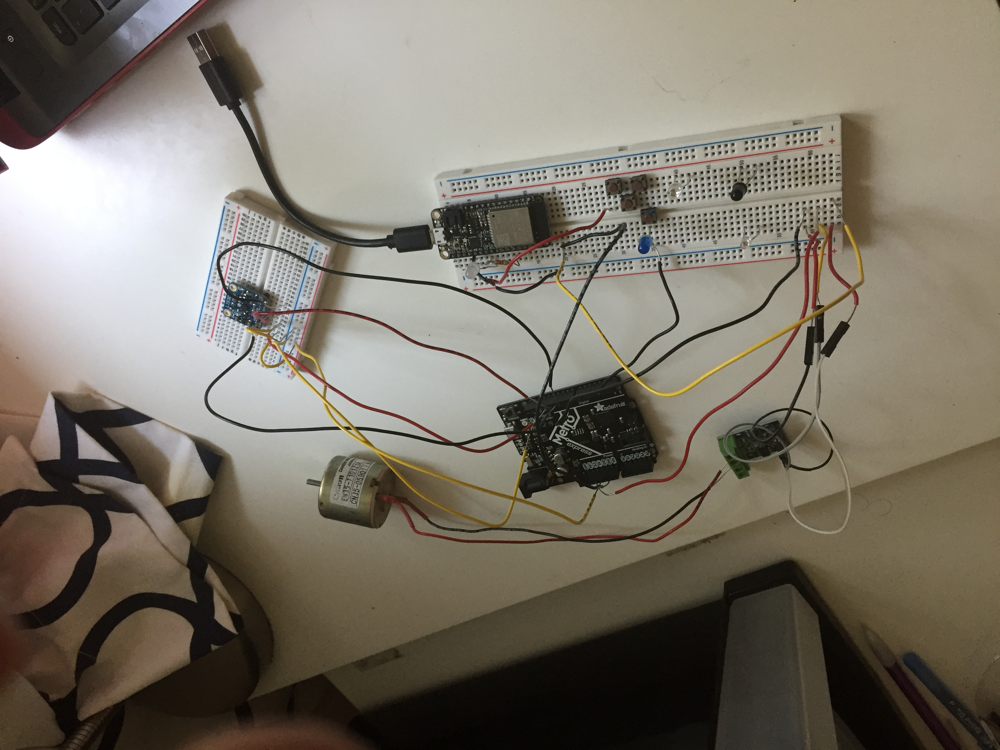
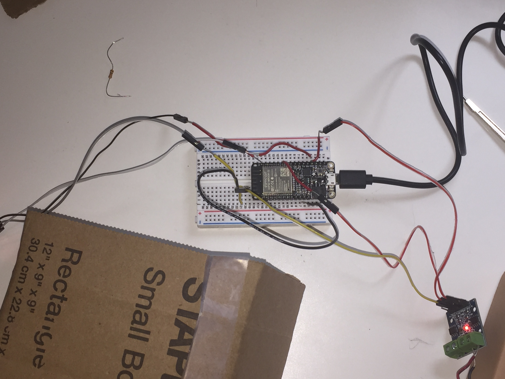
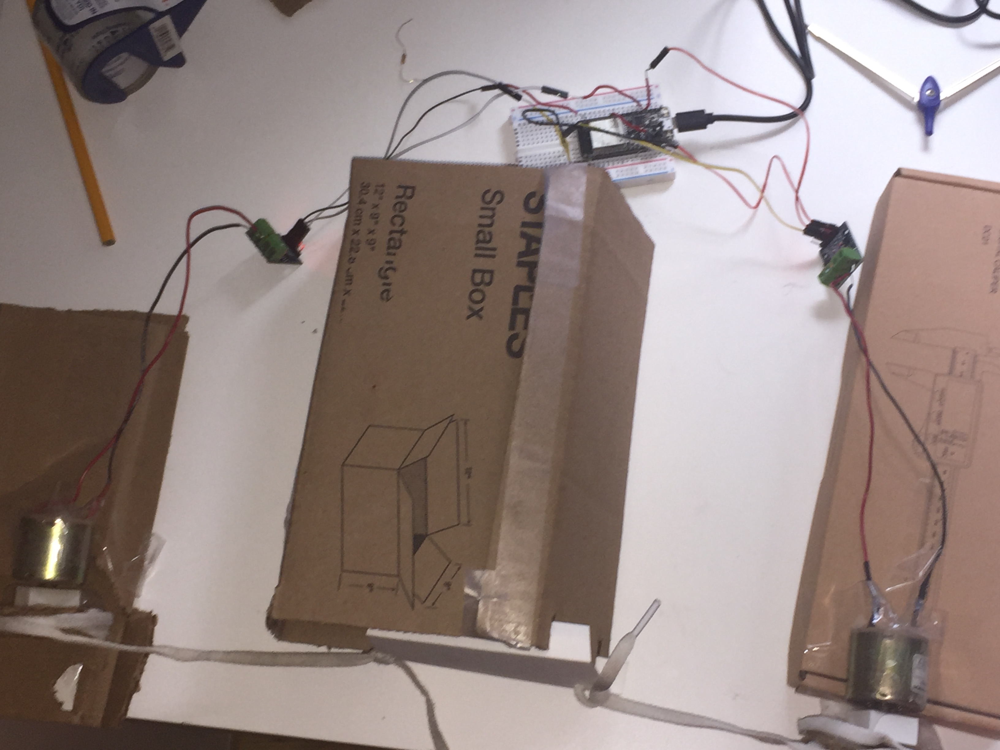
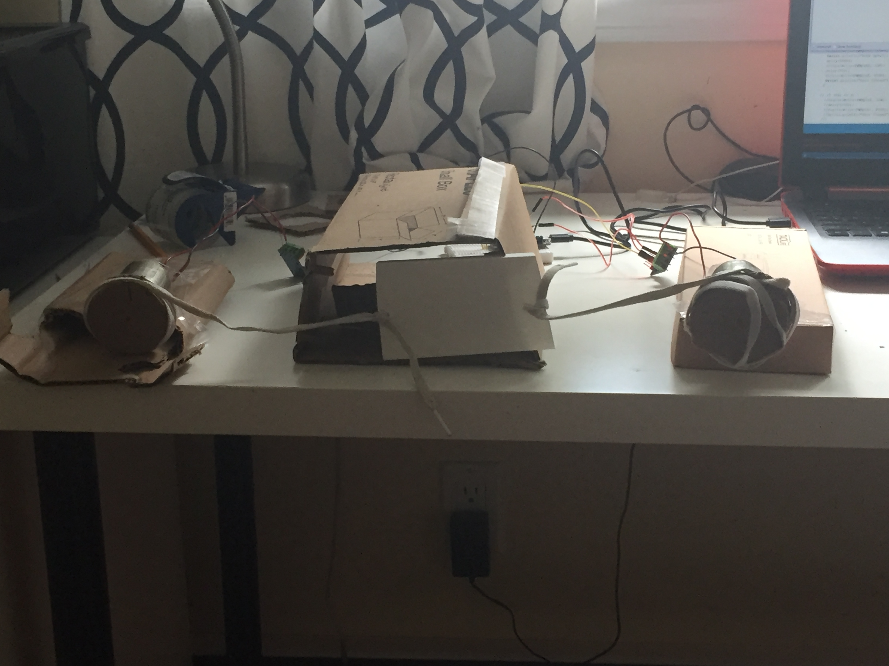

During the first part of Week 5, I planned on creating a Networking Circuit using a Lan Server. A LAN server based circuit requires that I connect to only one specific WIFI network, in this case, being my home WiFi.
Here is the Arduino Code I used for the Circuit (That just activate the first 2 LEDs):
.png)
.png)
.png)
On the Breadboard, I have a multiple number of circuits. The 1st Breadboard containing the Accelerometer, is connected to a Metro Board. On a 2nd Breadboard (Long Breadboard), I have a Huzzah board connected on it. There are wires that go from the GND of the Huzzah board to the first Button of the Series of Buttons (that are connected to each other). There is a Wire connected to the Last Button on the Series that originates from Pin3 of the MetroBoard. There is another wire that originates from a different Pin (Pin8) that connected to the LongBreadboard in the same row of the wire that connects to a Canon Motor.
Here is the Set of Circuits

This is the LAN page, where I go to Activate the Circuit:
.png)
LAN page is accessed through the computer IP Address derived from the Serial Monitor on Arduino
While the Circuits and Wiring are mostly completed, the coding associated with the Circuit System is still a work in progress. As of now, when the On button is initiated on the LAN page, an LED (white) will light up, and a signal will be sent to the first button. When all 4 buttons of the series of buttons are presed, they will send a signal to the Blue LED and light it up, as well as the wire connected to Metro Pin3. As per a completed code with THIS circuit, once the "ON" button on the LAN page is pressed, the MetroBoard will start reading the Accelerometer Breadboard. If the Accelerometer sends certain xyz values, the Metro will then start reading PIN3. If PIN3 shows a HIGH signal, the Metro will then send a signal from pin8 that will activate the Canon Motor.
Here is the Work in Progress code, that will be used to conduct all of the processes listed above:
.png)
.png)
.png)
.png)
Opening and Closing Door
During this part of Week 5, we got insight into Serial Parsing and Communication using Integers. Based on the information I learned, I decided to create an opening and closing door, that could possibly be incorporated into my final project.
I decided to use a Huzzah board (on a Breadboard), and two Canon Motors for this assignment, as well as home materials such as carboard and tape. Both Canon Motors were plugged into their own Microchip, which were then connected to GND and USB (5 voltage supplies) on the Huzzah board. Each of the microchips were also connected to their own unique Pins on the Huzzah board. These 3 parts were placed on the sides and back of a cardboard box that contained a poster paper door. Attached to the canon motors were cardboard wheels that were connected to the door using shoe laces.
Here are the top and front angle of the finished assigment, as well as a photo of the Huzzah board Circuit:



As per the code, once the Serial Communication Receiver were to receive three integers, it would turn on a Canon Motor connected to one of the Motors, display a message on the Serial Monitor saying that the door was opened. Then after 5 seconds, the other Canon Motor would turn on, and a message saying the door was closed would appear.
Here is the Arduino Code that would Instruct the process above:
.png)
.png)
.png)
Unfortunately, since my MetroBoard was short Circuited, I couldn't use the 9 Volt adapter to supply 9 Volts to my ciruit, and the maximum I could was 5 volts. Therefore, either of the motors were not able to move the door when the other motor was attached to the door through the laces. Therefore, when running the circuit, I could only run it with either one Motor connected to the Door.
Here is the video of the Door Opening and Closing, and the Serial Monitor Receiving Messages (as per the code):
.png)